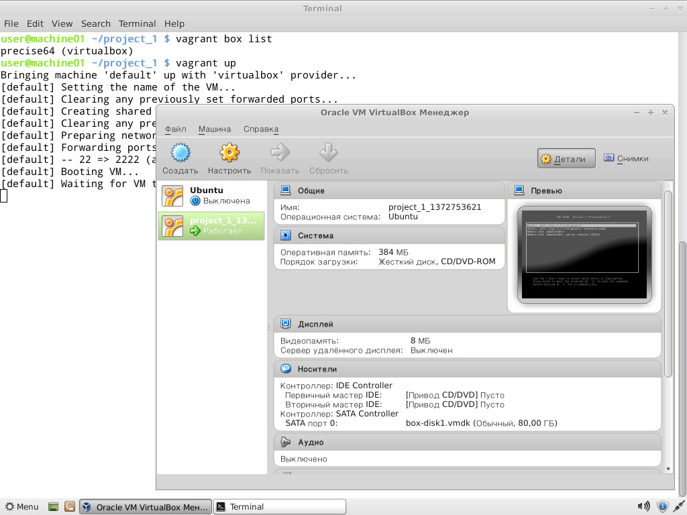
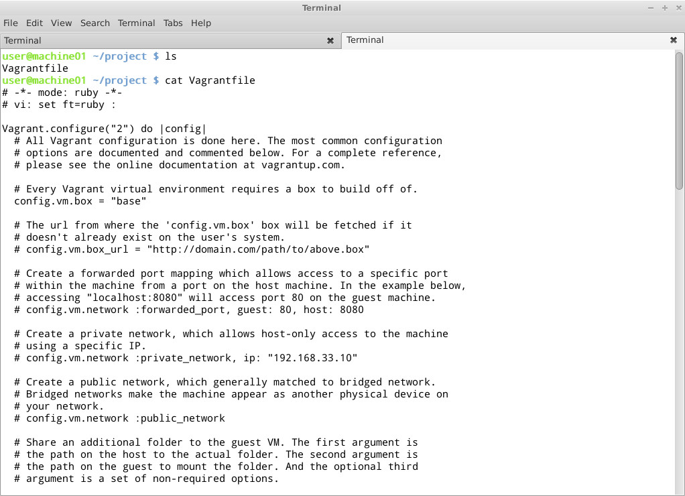
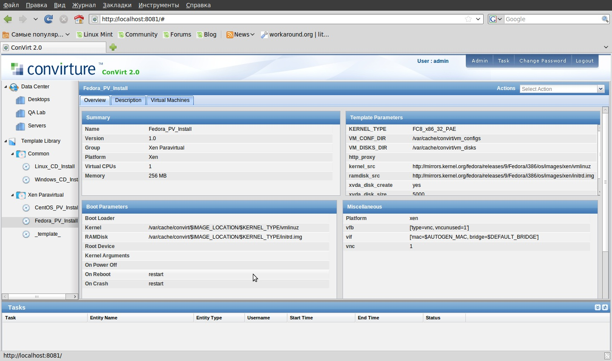
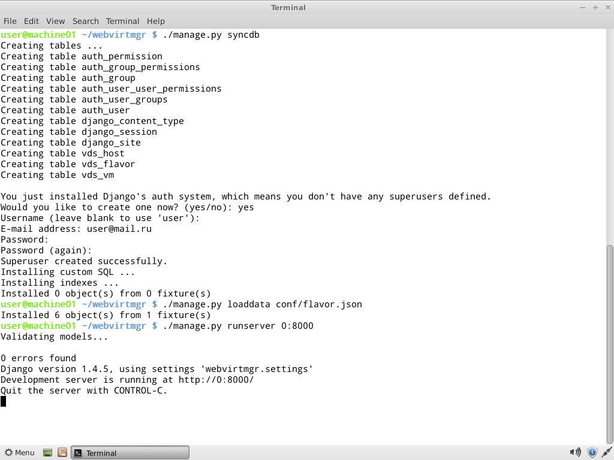
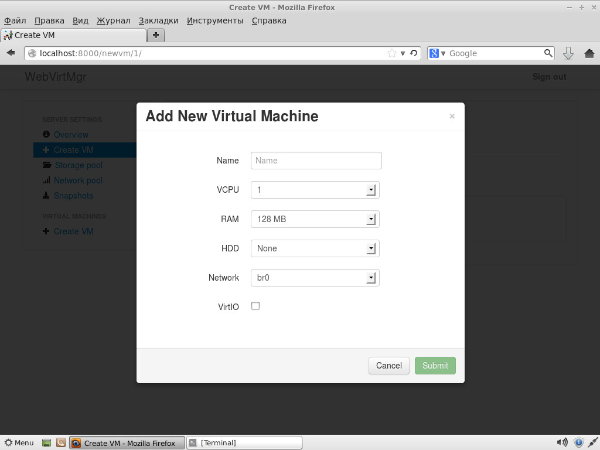
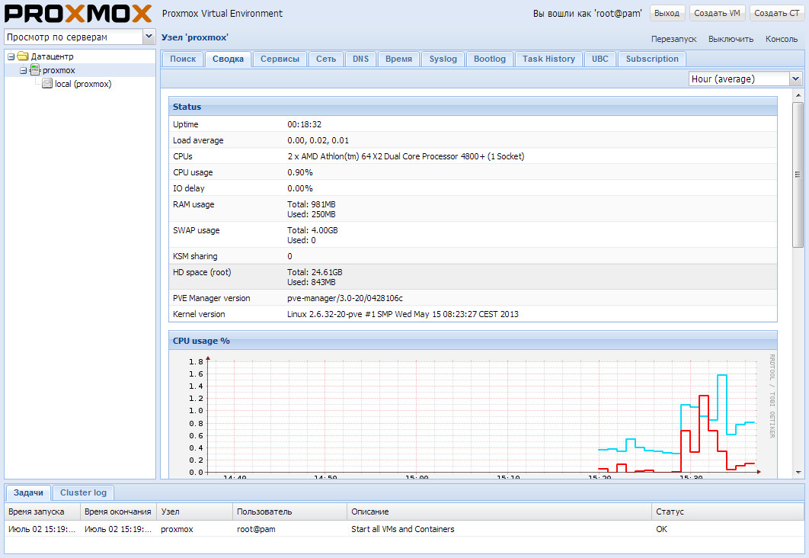

Сегодня многие задачи, для которых традиционно отводилось несколько физических серверов, переносятся в виртуальные среды. Технологии виртуализации востребованы и разработчиками софта, поскольку позволяют всесторонне тестировать приложения в различных ОС. Вместе с тем, упрощая многие вопросы, системы виртуализации сами нуждаются в управлении, и без специальных решений здесь не обойтись.
Vagrant
Виртуальная машина VirtualBox заслуженно пользуется популярностью среди админов и разработчиков, позволяя быстро создавать нужные окружения при помощи графического интерфейса либо интерфейса командной строки. Если количество VM не превышает трех, никаких трудностей в развертывании и управлении не возникает, но современные проекты имеют свойство обрастать конфигурациями, и в итоге получается весьма сложная инфраструктура, справиться с которой становится непросто. Вот эту проблему и призван решить менеджер виртуальных окружений Vagrant, позволяющий создавать копии виртуальных машин с заранее определенной конфигурацией и динамически перераспределять ресурсы VM (Provisioning) по мере необходимости. В базовой поставке Vagrant работает с VirtualBox, но система плагинов позволяет подключить другую систему виртуализации. На сегодня открыт код плагинов для AWS и Rackspace Cloud, по коммерческой подписке доступен плагин для поддержки VMware Fusion/Workstation.

Vagrant — удобная надстройка над VirtualBox
Vagrant не создает виртуальную машину с нуля. Для удобства проект предлагает несколько базовых образов (boxes), которые импортируются и впоследствии используются для быстрого развертывания системы, уже на основе boxes собирается гостевая ОС с нужной конфигурацией.
Для упрощения развертывания приложений в boxes предустанавливаются Chef и Puppet. Кроме того, нужные установки можно задавать при помощи shell. В состав окружений включается полный комплект для запуска и разработки приложений на Ruby. Для доступа к VM используется SSH, возможен обмен файлами через расшаренную директорию.
Написан Vagrant с использованием Ruby, установить его можно на любую платформу, для которой есть компоненты VirtualBox и Ruby. На странице загрузки доступны пакеты для Windows, Linux (deb и rpm) и OS X.
Процесс установки и использования в Ubuntu прост. Скачиваем пакеты VirtualBox и Vagrant и ставим:
$ sudo dpkg -i virtualbox-4.2.10_amd64.deb
$ sudo dpkg -i vagrant_1.2.2_x86_64.deb
На момент написания статьи с последней актуальной версией VirtualBox 4.2.14 были проблемы при запуске Vagrant, поэтому пока лучше использовать 4.2.12 или тестовую 4.2.15. Как вариант, можно выполнить:
$ cd ~/.vagrant.d/boxes/BoxName/virtualbox
$ openssl sha1 *.vmdk *.ovf > box.mf
Приведу альтернативный вариант установки Vagrant — с использованием Ruby:
$ sudo apt-get install ruby1.8 ruby1.8-dev rubygems1.8
$ sudo gem install vagrant
Все настройки проекта производятся в специальном файле Vagrantfile. Чтобы не создавать шаблон вручную, его можно сгенерировать следующим образом:
$ mkdir project
$ cd project
$ vagrant init
Теперь можно заглянуть в созданный файл настроек и заполнить: установки VM (config.vm.), опции подключения по SSH (config.ssh.), параметры самого Vagrant (config.vagrant). Все они хорошо документированы, значение некоторых понятно и без пояснений.
На самом деле при запуске используется несколько таких файлов, каждый последующий переопределяет предыдущий: встроенный в Vagrant (его изменить нельзя), поставляемый с boxes (упаковывается при помощи ключа ‘—vagrantfile’), расположенный в ~/.vagrant.d и файл проекта. Такой подход позволяет использовать установки по умолчанию, переопределяя в конкретном проекте только то, что необходимо.

Настройка проекта в Vagrant производится при помощи специального файла
Все установки производятся при помощи команды vagrant, список доступных ключей можно просмотреть при помощи ‘-h’. После установки мы не имеем ни одного образа, запуск vagrant box list выведет пустой список. Готовый box может находиться в локальной ФС или на удаленном сервере, в качестве параметра задается его имя, по которому будем обращаться в проектах. Например, используем официальный Box Ubuntu 12.04 LTS, предлагаемый разработчиками Vagrant.
$ vagrant box add precise64 http://files.vagrantup.com/precise64.box
Теперь к нему можно обращаться из Vagrantfile:
config.vm.box = "precise64"
Хотя проще сразу его указать при инициализации проекта:
$ vagrant init precise64
Самый простой способ, не требующий изучения Chef и Puppet, — это использовать для конфигурирования VM стандартные команды оболочки, которые можно прописать прямо в Vagrantfile или, что еще лучше, объединить в скрипт, который подключается так:
Vagrant.configure("2") do |config|
config.vm.provision :shell, :inline => "script.sh"
end
Теперь все команды, указанные в script.sh, будут выполнены при запуске VM. При старте проекта создается ovf-файл, его установки можно просмотреть при помощи графического интерфейса VirtualBox или команды VBoxManage:
$ VBoxManage import /home/user/.vagrant.d/boxes/precise64/virtualbox/box.ovf
Virtual system 0:
0: Suggested OS type: "Ubuntu_64"
(change with "--vsys 0 --ostype <type>"; use "list ostypes" to list all possible values)
1: Suggested VM name "precise64"
(change with "--vsys 0 --vmname <name>")
2: Number of CPUs: 2
(change with "--vsys 0 --cpus <n>")
3: Guest memory: 384 MB
(change with "--vsys 0 --memory <MB>")
Не всегда они удовлетворяют заданным условиям, но, используя настройки провайдера, можно легко изменить установки конкретной VM (см. подсказки «change with …»):
config.vm.provider :virtualbox do |vb|
vb.customize ["modifyvm", :id, "--memory", "1024"]
end
Запускаем и подключаемся к системе по SSH:
$ vagrant up
$ vagrant ssh
Чтобы остановить VM, используется параметр halt или destroy (второй — с очисткой всех файлов, в следующий раз все операции будут выполнены с начала), если нужно отправить ее в спячку — vagrant suspend, вернуть — vagrant resume. Для примера работы с Chef можно использовать готовый рецепт, при помощи которого настроить APT и Apache2:
config.vm.provision :chef_solo do |chef|
chef.recipe_url = "http://files.vagrantup.com/getting_started/cookbooks.tar.gz"
chef.add_recipe("vagrant_main")
end
Чтобы обращаться к VM «извне», потребуется настроить проброс портов. По умолчанию производится проброс 22 -> 2222, позволяющий подключаться по SSH. Добавляем в Vagrantfile:
Vagrant::Config.run do |config|
config.vm.forward_port 80, 1111
end
Теперь к веб-серверу можно обратиться, перейдя по адресу http://127.0.0.1:1111/. Чтобы не настраивать окружение каждый раз, лучше собрать на его основе готовый пакет.
$ vagrant package --vagrantfile Vagrantfile --output project.box
Теперь файл project.box можно распространить среди остальных администраторов, разработчиков или простых пользователей, которые подключат его при помощи командыvagrant box add project.box.
ConVirt
Системы виртуализации Xen/KVM, выпускаемые под свободными лицензиями, не имеют удобного интерфейса, что часто трактуется не в их пользу. Однако этот недостаток легко восполнить. ConVirt позволяет развертывать виртуальные машины на нескольких серверах Xen и KVM буквально одной кнопкой, при помощи простого в использовании интерфейса. Доступны все необходимые операции с виртуальными машинами: запуск, останов, создание снимков, контроль и перераспределение ресурсов, подключение к VM по VNC, автоматизация задач администрирования. Технология Ajax делает интерфейс интерактивным и похожим на настольное приложение. Например, VM с одного сервера на другой можно просто перетащить. Интерфейс нелокализован, но управление интуитивно понятное.

Интерфейс ConVirt позволяет выполнять все задачи администрирования
Объединение серверов в пулы дает возможность настраивать и контролировать виртуальные машины и ресурсы на уровне серверного пула, а не отдельного сервера. На виртуальных системах не устанавливаются агенты, необходим лишь пакет convirt-tool на физическом сервере. Это упрощает администрирование и развертывание.
После добавления нового сервера ConVirt автоматически соберет данные о его конфигурации и производительности, предоставляя итоговую информацию на нескольких уровнях — от отдельной виртуальной машины, физического сервера до всего пула. Собранные данные используются для автоматического размещения новых гостевых систем. Эта информация также выводится в виде наглядных графиков.
Для создания виртуальных машин используются шаблоны — описания настроек виртуальной машины, содержащие данные о выделяемых ресурсах, путь к файлам ОС и дополнительные настройки. После установки доступно несколько готовых шаблонов, но при необходимости их легко создать самому.
Поддерживаются все технологии: балансировка нагрузки, горячая миграция, виртуальные диски с растущей емкостью, позволяющие задействовать ресурсы по мере необходимости, и многие другие возможности, реализованные в Xen и KVM. Чтобы перераспределить ресурсы, остановка VM не требуется.
Реализована возможность управления виртуальной средой нескольким администраторам с возможностью аудита и контроля над их действиями.
Разработку ConVirt ведет компания Convirture, при этом используется концепция open core (открытая основа), когда вместе с исходными текстами свободно распространяется только базовый набор функций, остальное доступно в коммерческой версии. В open source варианте отсутствует поддержка High Availability, интеграция с VLAN, резервирование и восстановление, возможность управления из командной строки, уведомления и официальная поддержка.
При разработке использовались фреймворк TurboGears2, библиотеки ExtJs и FLOT, для хранения информации — MySQL, в качестве DHCP- и DNS-сервера задействован dnsmasq. Нужный пакет можно найти в репозиториях популярных дистрибутивов Linux.
Karesansui
Karesansui — простое в использовании веб-приложение для управления системами виртуализации KVM и Xen. Учитывая, что поддержка виртуализации базируется на libvirt, особых трудов добавить OpenVZ, QEMU, VirtualBox не составит. Управление осуществляется при помощи веб-браузера, интерфейс реализован в стиле Web 2.0 с элементами Ajax, использование фреймворка jQuery позволило придать интерфейсу интерактивность, подобную работе за локальной консолью в дата-центре. Интерфейс не локализован, но каких-либо трудностей в его освоении не возникает. Для доступа к экранам виртуальных машин используется TightVNC Java Viewer.
Реализованы все возможности для управления виртуальными окружениями: установка ОС, создание конфигураций дисковой подсистемы и виртуальных сетевых карт, управление квотами, репликация, заморозка VM, создание снапшотов, просмотр подробной статистики и данных журналов, мониторинг загрузки. С одной консоли можно управлять несколькими физическими серверами и размещенными на них виртуальными машинами. Возможна многопользовательская работа с разделением прав. В итоге разработчикам удалось в браузере реализовать виртуальное окружение, позволяющее полноценно управлять системами.
Написан Karesansui на языке Python, в качестве СУБД для одноузловой системы используется SQLite. Если планируется управлять установками Karesansui, размещенными на нескольких физических серверах, следует использовать MySQL или PostgreSQL.
Развернуть Karesansui можно в любом Linux. Сами разработчики отдают предпочтение CentOS (для которого на сайте есть подробная инструкция), хотя Karesansui неплохо себя чувствует и на Debian и Ubuntu. Перед установкой необходимо выполнить все зависимости, указанные в документации. Далее запускается установочный скрипт и инициализируется БД. Если используется многосерверная конфигурация, то нужно просто указать внешнюю БД.
Последующая работа полностью компенсирует неудобства установки. Все настройки разделены по семи вкладкам, назначение которых понятно из названия: Guest, Settings, Job, Network, Storage, Report и Log. В зависимости от роли пользователя ему будут доступны не все из них.
Создать новую VM можно из локального ISO-файла или указав HTTP/FTP-ресурс с установочными образами. Также потребуется задать остальные атрибуты: имя системы, которое будет отображаться в списке, сетевое имя (hostname), технология виртуализации (Xen или KVM), размер ОЗУ и жесткого диска (Memory Size и Disk Size) — и выбрать картинку, которая будет соответствовать виртуальной ОС, упрощая ее быстрый визуальный выбор в консоли.
INFO: Исходные коды Vagrant и Karesansui распространяются под лицензией MIT. Для создания боксов Vagrant удобно использовать инструмент VeeWee.
WebVirtMgr
Возможности описанных решений зачастую избыточны, а их установка не всегда понятна администратору с небольшим опытом. Но и здесь есть выход. Сервис централизованного управления виртуальными машинами WebVirtMgr создавался как простая замена virt-manager, которая обеспечит комфортную работу с VM при помощи браузера с установленным Java-плагином. Поддерживается управление настройками KVM: создание, установка, настройка, запуск VM, снапшоты и резервное копирование виртуальных машин. Обеспечивается управление сетевым пулом и пулом хранилища, работа с ISO, клонирование образов, просмотр загрузки ЦПУ и ОЗУ. Доступ к виртуальной машине осуществляется через VNC. Все операции фиксируются в журналах. При помощи одной установки WebVirtMgr можно управлять несколькими серверами KVM. Для подключения к ним используется RPC libvirt (TCP/16509) или SSH.

Установка WebVirtMgr несложна
Интерфейс написан на Python/Django. Для установки понадобится сервер под управлением Linux. Распространяется в исходных текстах и RPM-пакетах для CentOS, RHEL, Fedora и Oracle Linux 6. Сам процесс развертывания несложен и хорошо описан в документации проекта (на русском), необходимо лишь настроить libvirt и установить webvirtmgr. Весь процесс занимает пять минут. После подключения к Dashboard выбираем Add Connection и указываем параметры узла, далее можем настраивать VM.

Создание новой VM в WebVirtMgr
Скриптуем создание VM
Простейший скрипт для создания и запуска виртуальной машины средствами VirtualBox:
#!/bin/bash
vmname="debian01"
VBoxManage createvm --name ${vmname} --ostype "Debian" --register
VBoxManage modifyvm ${vmname} --memory 512 --acpi on --boot1 dvd
VBoxManage createhd --filename "${vmname}.vdi" --size 10000 --variant Fixed
VBoxManage storagectl ${vmname} --name "IDE Controller" --add ide --controller PIIX4
VBoxManage storageattach ${vmname} --storagectl "IDE Controller" --port 0 --device 0 --type hdd --medium "${vmname}.vdi"
VBoxManage storageattach ${vmname} --storagectl "IDE Controller" --port 0 --device 1 --type dvddrive --medium /iso/debian-7.1.0-i386-netinst.iso
VBoxManage modifyvm ${vmname} --nic1 bridged --bridgeadapter1 eth0 --cableconnected1 on
VBoxManage modifyvm ${vmname} --vrde on
screen VBoxHeadless --startvm ${vmname}
Proxmox VE
Предыдущие решения хороши для тех ситуаций, когда уже есть некоторая инфраструктура. Но если ее предстоит только разворачивать, стоит задуматься о специализированных платформах, позволяющих быстро получить нужный результат. Примером здесь может служить Proxmox Virtual Environment, представляющий собой дистрибутив Linux (на базе Debian 7.0 Wheezy), который позволяет быстро построить инфраструктуру виртуальных серверов с использованием OpenVZ и KVM и практически не уступает таким продуктам, как VMware vSphere, MS Hyper-V и Citrix XenServer.

Консоль Proxmox VE локализована и проста в использовании
По сути, систему следует только установить (пара простых шагов), все остальное уже работает из коробки. Затем при помощи веб-интерфейса можно создавать VM. Для этой цели проще всего использовать шаблоны и контейнеры OpenVZ, которые загружаются с внешних ресурсов прямо из интерфейса одним щелчком (если вручную, то копируем в каталог /var/lib/vz/template). Но шаблоны можно создавать в том числе и путем клонирования уже созданных систем в режиме связывания. Этот вариант позволяет экономить дисковое пространство, так как все связанные окружения используют только одну общую копию данных эталонного шаблона без дублирования информации. Интерфейс локализован и понятен, особых неудобств при работе с ним не испытываешь.
Имеется поддержка кластеров, инструменты для резервного копирования виртуальных окружений, возможна миграция VM между узлами без остановки работы. Управление доступом к имеющимся объектам (VM, хранилище, узлы) реализовано на основе ролей, поддерживаются различные механизмы аутентификации (AD, LDAP, Linux PAM, встроенная Proxmox VE). Веб-интерфейс предоставляет возможность доступа к VM при помощи VNC- и SSH-консолей, можно просматривать статус заданий, журналы, данные мониторинга и многое другое. Правда, некоторые операции, специфические для HA-систем, придется все же выполнять по старинке в консоли, например создавать авторизованное iSCSI-подключение, настраивать кластер, создавать multipath и некоторые другие операции.
Системные требования невелики: CPU x64 (желательно с Intel VT/AMD-V), 1+ Гб ОЗУ. Проект предлагает готовый ISO-образ и репозиторий для Debian.

Ссылки на материалы
Сайт проекта Vagrant: vagrantup.com
Книга Vagrant Up and Running: bit.ly/177wzfR
Сайт Karesansui: karesansui-project.info
Проект ConVirt: convirture.com
Сайт WebVirtMgr: webvirtmgr.net
Страница Proxmox VE: proxmox.com/proxmox-ve
Заключение
Все описанные решения по-своему хороши и отлично справляются с поставленными задачами. Нужно только выбрать наиболее подходящее к конкретной ситуации.